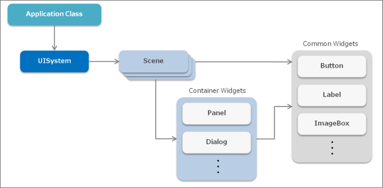
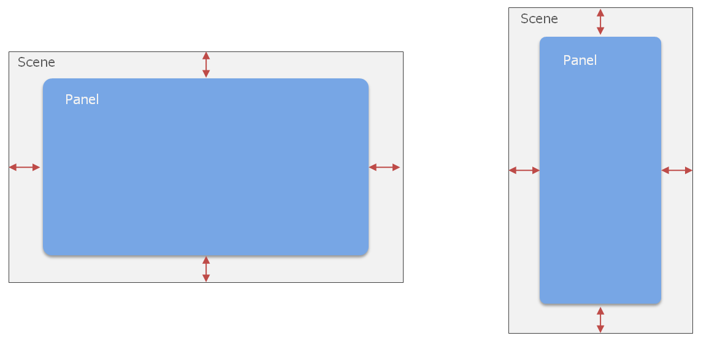
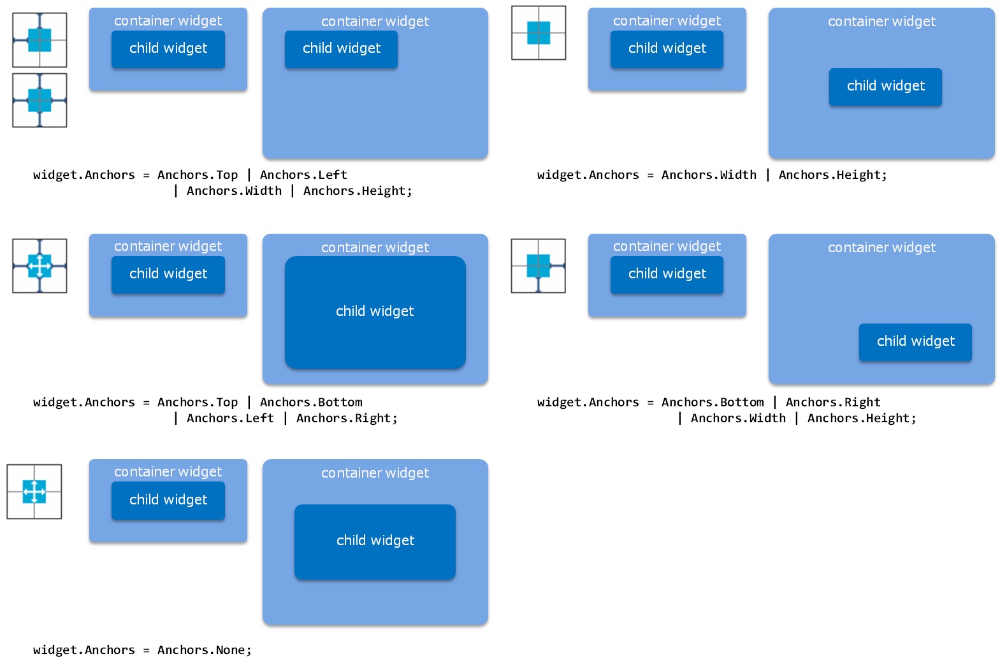
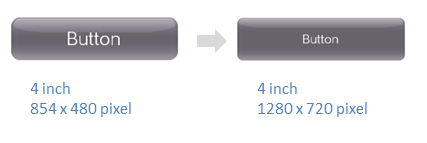
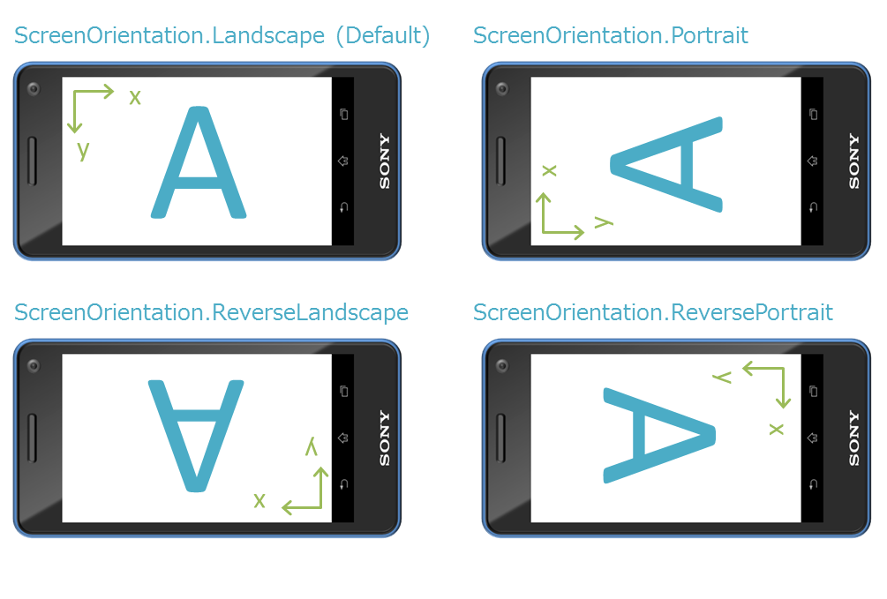
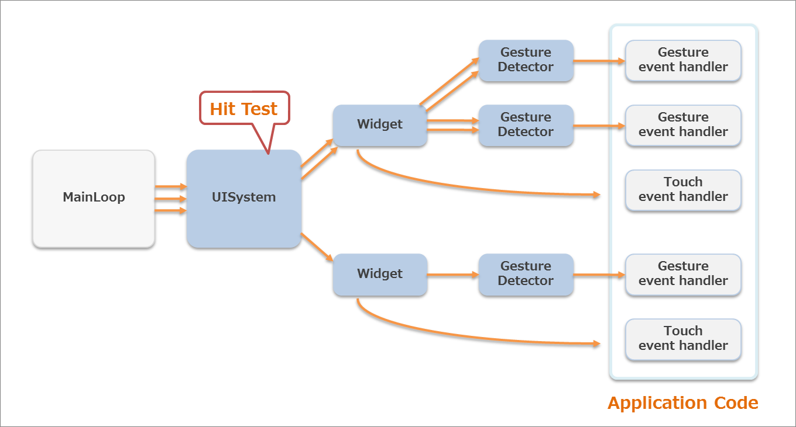
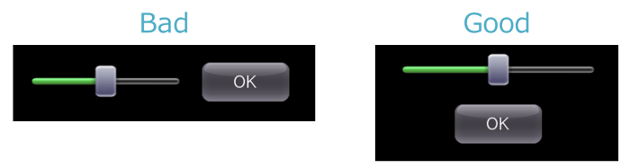
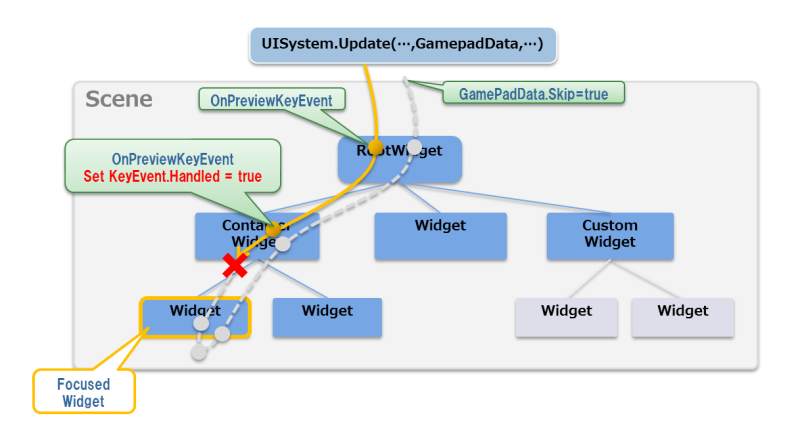

この章では、UI Toolkit の基本概念を解説します。
UI Toolkit のプロジェクトの作成方法は UI Toolkit プログラミングガイド - クイックスタート を参照してください。
Contents
UI Toolkit を使用したアプリケーションでの主なオブジェクトの種類と関係を図1と表1に示します。
図1 UI Toolkit を使用したアプリケーションの主要オブジェクト
表1 主要オブジェクトの一覧 オブジェクト 説明 UISystem UI Toolkit のシステム全体を管理するオブジェクト シーン (Scene) 画面を表すオブジェクト ウィジェット (Widget) ユーザーインターフェースを構成する部品（ボタンやラベルなど） コンテナウィジェット (Container widget) 内部に別のウィジェットを格納することが出来るウィジェット（パネルやダイアログなど） UISystem は UI Toolkit のシステム全体を管理するオブジェクトで、UI Toolkit の初期化やフレームの更新、描画、画面の遷移などを行います。UISystem は静的クラスになっており、ひとつのアプリケーション上で複数の UI Toolkit システムを使うことは出来ません。
シーンは画面を表しており、UISystem に設定することで画面が表示されます。ひとつのアプリケーションで複数のシーンを作成することができ、UISystemに設定するシーンを切り替えれば画面遷移を行えます。なお、通常は同時にひとつのシーンしか表示できません。
シーンには複数のウィジェットを配置することが出来ます。コンテナウィジェットはウィジェットの一種で、内部に別のウィジェットを配置することが出来ます。このコンテナウィジェットを用いることで、ウィジェットのツリー構造を構築できます。Scene 内の Widget のレイアウトは UI Composer を使用することで、視覚的に行うことが出来ます。
ここでは UI Toolkit を利用したアプリケーションが開始してから終了するまでのフローを説明します(図2)。

図2 UI Toolkit を使用したアプリケーションのライフサイクル
青のブロックが UI Toolkit の処理、白のブロックがロジックやゲームなどのその他の処理になります。
まず初めにアプリケーション側の初期化処理、および UISystem の初期化処理が行われます。次にシーンが作成され、そのシーンへのウィジェットのレイアウトも行われます。その後、メインループに入り、各フレームの更新と描画処理が行われます。更新の際にウィジェットなどからイベントが発行され、各イベントハンドラが実行されます。最後に、アプリケーションが終了状態になると、メインループから抜けてアプリケーションが終了します。
UISystem の描画の前にアプリケーション側の描画を行うことで、ゲームと UI を重ねて描画することも可能です。
UI Toolkit では以下のようなシーングラフを構成しています(図3)。

図3 UI Toolkit のシーングラフ
Scene
画面をあらわしています。ひとつのアプリケーションで複数のシーンを作成することができますが、通常は同時にひとつのシーンしか表示できません。
Widget
ユーザーインターフェースを構成する部品 (ウィジェット) です。ボタンやラベルなどにあたります。ウィジェットはツリー構造を構築でき、シーンひとつにこのツリーがひとつ配置されています。複数のウィジェットをまとめてひとつのウィジェットとして扱うことも出来ます。標準のウィジェットについての詳細は UI Toolkit プログラミングガイド - ウィジェット を参照してください。
RootWidget
ウィジェットのツリーのルートとなる特殊なウィジェットです。シーンにひとつだけ存在します。RootWidgetのオブジェクトはユーザーが作成することはできず、シーンの作成時に自動で作られます。画面に表示する場合はこのルートウィジェットに表示したいウィジェットをぶら下げる必要があります。
UIElement
描画要素です。UIElement もツリー構造を構築できます。ウィジェットは この UIElement のツリーで構成されています。
RootUIElement
UIElement のツリーのルートとなる UIElement です。ウィジェットにひとつだけ表示されます。
シーングラフの描画順序
ルートウィジェットから深さ優先で描画されます。末端のウィジェットが一番手前に表示されます。ウィジェットが描画される際には UIElement ルートの UIElement から順に描画されます。
先ほどのシーングラフの例では次の順番で描画されます(図4)。

図4 描画順序
ウィジェットを配置する際の座標系は、左上が原点となります。
また、ウィジェットがツリーを構築している場合、子ウィジェットの座標は親ウィジェットからの相対座標になります(図5)。

図5 ウィジェットの座標系
ウィジェットを3次元で配置することも可能です。詳細は UI Toolkit プログラミングガイド - UI Toolkitの描画の仕組み を参照してください。
シーンやパネルなどのコンテナウィジェットは、内部に配置したウィジェットのサイズや、マージンを動的に調節する機能を持っています(レイアウトアンカー機能)。
例えば、背景などに用いるパネルはマージンを固定にし、サイズを自動的に変化するように設定しておけば、異なるディバイスごとにレイアウトを指定する必要はありません(図6)。
図6 マージンを固定にした Panel を異なるサイズの Scene に配置した例
レイアウトアンカーはウィジェットの Anchors プロパティで指定可能です。
コードでは以下のように、Top, Bottom, Left, Right, Width, Height のうちどのサイズを固定するかを指定します。
widget.Anchos = Anchors.Top | Anchors.Left | Anchors.Width | Anchors.Height;以下に代表的なパターンを示します(図7)。
図7 Anchorsの設定例
ピクセル密度を指定し、スクリーンサイズをスケーリングさせる方法について説明します。
レイアウトアンカー機能ももちいてディスプレイのサイズに合わせてウィジェットの位置やサイズを変更した場合でも、同じインチサイズで異なる解像度のディスプレイでは、フォントサイズや9-patch 画像の見た目が変わってしまいます（図8）。
図8 解像度の異なるディスプレイで表示した例
ピクセル密度を指定すると、UI Toolkit上での仮想的なディスプレイサイズをスケーリングすることができます。
例えば、ディスプレイのサイズが1280x720ピクセルのディバイスでピクセル密度に1.5に指定すると、UI Toolkit上では仮想的に853x480ピクセルのディスプレイとして扱われます。
ウィジェットの位置やサイズ、フォントサイズなども853x480ピクセルのディスプレイで配置する場合と同じ値になり、最終的にディスプレイに描画されるときに1.5倍されます。
ピクセル密度はUI Toolkitの初期化時に指定します。以下のコードを参考に、ピクセル密度を算出して指定してください。
// AppMain.cs public static void Initialize () { // Set up the graphics system graphics = new GraphicsContext (); // Get pixel-density float pixelDensity = getPixelDensity(graphics); // Initialize UI Toolkit with pixelDensity UISystem.Initialize (graphics, pixelDensity); } // get pixel-density from actual screen size and DPI static float getPixelDensity(GraphicsContext graphics) { float pixelDensity; float w = graphics.Screen.Width / SystemParameters.DisplayDpiX; float h = graphics.Screen.Height / SystemParameters.DisplayDpiY; float inchDiagSq = w * w + h * h; if (inchDiagSq < 6 * 6) { // normal size display ( < 6 inch) if (SystemParameters.DisplayDpiX < 300) { // normal resolution pixelDensity = 1.0f; } else { // high resolution pixelDensity = 1.5f; } } else { // large size display ( > 6 inch) if (SystemParameters.DisplayDpiX < 200) { // normal resolution pixelDensity = 1.0f; } else { // high resolution pixelDensity = 1.5f; } } return pixelDensity; }なお、UI Toolkit上でFontクラスやTexture2Dクラスを直接扱う場合、ピクセル密度の値を考慮する必要があるので注意してください。
画面の向きを変更する方法を説明します。
図9のようにデバイスの把持方向に応じた画面表示ができます。

図9 ディバイスの方向に応じた画面の向き
Scene クラスの ScreenOrientation プロパティを設定することによって、シーンごとに表示する方向を変更できます。
以下のコード例では、ScreenOrientation プロパティを設定後、UI Composerで出力したメソッドを利用して再レイアウトし、UISystem.SetScene を呼び出しています。
// Set ScreenOrientation property TargetScene.ScreenOrientation = ScreenOrientation.Portrait; // Relayout (UI Composer output method) TargetScene.SetWidgetLayout(LayoutOrientation.Vertical); // Set this scene UISystem.SetScene(TargetScene);ScreenOrientation の各設定値の表示結果は以下のようになります(図10)。
図10 ScreenOrientation の表示例
ScreenOrientation を指定すると、座標系、タッチパネルの座標、方向キーの向き、モーションセンサーの向きも同時に変更されます。
UISystem.FramebufferWidth、FramebufferHeight プロパティの値は ScreenOrientation に依存せず、常に Landscape 状態の値を返します。
また、Transition も Landscape を基準に動作します。たとえば、Portraite のシーンから ReversePortrait のシーンに PushTransition の Left を実行すると、それぞれのシーンは Portraite、ReversePortrait で表示されますが、遷移アニメーションは Landscape 状態で左方向に移動します。
制限事項
- 現在表示中のシーンの ScreenOrientation は変更できません。あらかじめ Scene.ScreenOrientation プロパティを設定したあとに UISystem.SetScene をしてください。
- UI Toolkit 以外で描画しているもの（テキスト入力ダイアログ、オンスクリーンコントローラーなど）は回転しません。
- シミュレータのウインドウは回転しません。内部の画面が回転します。
アニメーションを実現する機能として Effect があります。 Effect はアニメーションを部品として扱い、ウィジェットなどのアニメーションを簡単に行うことが出来ます。
標準で用意されている Effect については、 UI Toolkit プログラミングガイド - Effect と Transition を参照してください。また、Effect クラスを派生することによって、ユーザー独自のアニメーションを作成することが出来ます。
Effect とは別に、画面遷移の際のアニメーションである Transition があります。UISystem に新しいシーンを設定する際に指定することで、画面遷移にアニメーションを適用できます。標準の Transition の詳細については、 UI Toolkit プログラミングガイド - Effect と Transition を参照してください。
UI Toolkit で画像を扱う場合は ImageAsset オブジェクトを使用します。
ImageAsset オブジェクトは以下のような特徴があります。
- 画像ファイルのキャッシュ
- 画像ファイルの非同期読み込み
- システム組み込みの画像の読み込み
- Texture2D オブジェクトの生成と解放
ウィジェットへ画像（テクスチャ）を設定する場合はすべて ImageAsset オブジェクトで行います。また、ウィジェット内部の描画要素である UIElement への設定も ImageAsset オブジェクトで行います。
ImageAsset オブジェクトは、画像ファイルのパス、Image オブジェクト、Texture2D オブジェクトから作ることが出来ます。
// Create from the image filepath. ImageAsset imageAsset1 = new ImageAsset("/Application/assets/photo01.png"); // Create from Image object. Image image = new Image("/Application/assets/photo02.png"); ImageAsset imageAsset2 = new ImageAsset(image); image.Dispose(); // Create from Texture2D object. Texture2D texture2d = new Texture2D("/Application/assets/photo03.png", false) ImageAsset imageAsset3 = new ImageAsset(texture2d); texture2d.Dispose();ファイルパスは "/Application/(プロジェクトファイルからの相対パス)" と指定してください。
SampleApp/ SampleApp.csproj AppMain.cs app.cfg MyClass.cs assets/ photo01.png : アセットファイル上記のようなファイル構成のプロジェクトの場合、アセットファイルのパスは以下のようになります。
"/Application/assets/photo01.png"
モーダルなダイアログウィンドウを表示するためには Dialog ウィジェットを使用します。
Dialog ウィジェット、およびその派生クラスのウィジェットは他のウィジェットと異なり、シーンに登録することなく画面上に表示することが出来ます。
Dialog dialog = new Dialog(); dialog.Show();
UI Toolkit のタッチイベント配信フローについて説明します。
図11 UI Toolkit のタッチイベント配信フロー
図11のオレンジ矢印が指1本分のタッチデータの流れを示しており、下記のように処理が進みます。
- タッチ操作が行われると、画面内にある Widget とヒット判定が行われます。
- ヒットした Widget に登録されている GestureDetector にイベントが配信されます。
- ジェスチャが認識された場合、ジェスチャイベントが発行され、GestureDetector に登録されているイベントハンドラに配信されます。
- GestureDetector による判定後、TouchEventReceived イベントハンドラにタッチイベントが配信されます。
ヒット判定は、指毎に行われ、同じ Widget を複数の指でタッチしていれば、タッチデータはまとめて配信されます。ヒット判定はタッチダウンしたときにのみ行い、タッチパネルから指が離されるか、キャンセルされるまで同じ Widget にタッチイベントが配信されます。指で Widget をドラッグする際などに、Widget 領域から指が外れた場合でも、指が離されるまではその Widget にタッチイベントが配信され続けることになります。
複数の指のタッチデータは TouchEventCollection にまとめて配信されます。TouchEventCollection.PrimaryTouchEvent に一番最初にその Widget に触れた指のタッチデータが格納されていますので、一本分の指のタッチデータだけで処理を行いたい場合はこちらをお使いください。
通常、子Widget にイベントが配信されると、親Widget には配信されません。タッチされている Widget にのみ配信されます。ただし、子Widget のタッチイベントをフックすることも可能です。Widget.HookChildTouchEvent でフックを有効にするかを指定可能で、有効にすると子Widget に配信される前に親Widget のタッチイベント処理が行われます。配信された TouchEventCollection の Forward フラグを変更することで、子Widget に配信するかどうかを制御できます。
Widget に GestureDetector を登録することで、Widget 対して行われたジェスチャイベントを処理することができます。一つの Widget には複数の GestureDetector を登録することができますが、同一の GestureDetector を複数の Widget に登録することはできません。
public class SampleScene : Scene { ImageBox imageBox; public SampleScene () { imageBox = new ImageBox(); DragGestureDetector drag = new DragGestureDetector(); drag.DragDetected += DragEventHandler; imageBox.AddGestureDetector(drag); FlickGestureDetector flick = new FlickGestureDetector(); flick.FlickDetected += FlickEventHandler; imageBox.AddGestureDetector(flick); this.RootWidget.AddChildLast(imageBox); } private void DragEventHandler(object sender, DragEventArgs e) { DoSomething(e); } private void FlickEventHandler(object sender, FlickEventArgs e) { DoSomething(e); } }Widget に TouchEventReceived イベントハンドラを登録することで、Widget に配信されたタッチイベントを処理することができます。
public class SampleScene : Scene { ImageBox imageBox; public SampleScene () { imageBox = new ImageBox(); imageBox.TouchEventReceived += new EventHandler<TouchEventArgs>(ImageBoxTouchEventReceived); this.RootWidget.AddChildLast(imageBox); } private void ImageBoxTouchEventReceived (object sender, TouchEventArgs eventArgs) { TouchEventCollection touchEvents = eventArgs.TouchEvents; // With single finger { TouchEvent e = touchEvents.PrimaryTouchEvent; DoSomething(e); } // With multi-fingers { foreach (TouchEvent e in touchEvents) { DoSomething(e); } } touchEvents.Forward = true; } }カスタムウィジェットを作成した場合は、Widget.OnTouchEvent() をオーバーライドすることによってタッチイベントを処理することができます。
public class SampleWidget : Widget { protected internal override void OnTouchEvent(TouchEventCollection touchEvents) { base.OnTouchEvent(touchEvents); // With single finger { TouchEvent e = touchEvents.PrimaryTouchEvent; DoSomething(e); } // With multi-fingers { foreach (TouchEvent e in touchEvents) { DoSomething(e); } } touchEvents.Forward = true; } }なお、タッチイベントを使用する場合は、Main Loop の中で UISystem.Update メソッドを List<TouchData> を含む引数付きで呼び出してください。
ここではゲームパッドによるUI操作を行う方法や注意点について説明します。
UI Toolkitでゲームパッドキーによる操作を有効にするには、UISystem.Update メソッドを呼び出す際に、 引数にGamePadData を含めるようにしてください。GamePadDataを含めることで、方向キーによるフォーカス操作、Enter、Backボタン(×または○ボタン)による操作が有効になります。
// in main loop public static void Update () { GamePadData gamePadData = GamePad.GetData (0); List<TouchData> touchDataList = Touch.GetData (0); // Update UI Toolkit UISystem.Update(touchDataList, gamePadData); }フォーカスが非アクティブな状態（フォーカスが表示されていない状態）でいずれかのゲームパッドのボタンを押すとフォーカスがアクティブ（フォーカスが表示された状態）になり、ゲームパッドでの操作が可能になります。フォーカスがアクティブな状態で一定時間経過するか、画面をタッチするとフォーカスが非アクティブになります。
方向キーによる操作
フォーカスがアクティブな状態で方向キーを操作すると通常はフォーカスが移動します。ただし、表2 に示すウィジェットでは方向キーでフォーカスが移動しない場合があるので、ウィジェットのレイアウトに注意してください。
表2 レイアウトに注意が必要なウィジェット ウィジェット
方向キーによる操作
レイアウトの注意事項
Slider(水平表示)
左右キーで値が変化します。
Sliderの左右にフォーカスの当たるウィジェットを配置しないようにして下さい。
Slider(垂直表示)
上下キーで値が変化します。
Sliderの上下にフォーカスの当たるウィジェットを配置しないようにして下さい。
DatePicker / TimePicker
上下キーで値が変化し、左右キーで列および左右のウィジェットへフォーカスが移動します。
DatePickerとTimePickerの上下にフォーカスの当たるウィジェットを配置しないようにして下さい。
ListPanel / GridListPanel（垂直表示）
上下キーでアイテムのフォーカスが移動し、上端下端ではスクロールします。フォーカスが最下端か最上端のアイテムにある場合は上下のウィジェットに移動します。
アイテム数が多い場合、ListPanelやGridListPanelの上下にはフォーカスの当たるウィジェットを配置しないようにして下さい。
GridListPanel（水平表示）
左右キーでアイテムのフォーカスが移動し、右端左端ではスクロールします。フォーカスが最右端か最左端のアイテムにある場合は左右のウィジェットに移動します。
アイテム数が多い場合、GridListPanelの左右にはフォーカスの当たるウィジェットを配置しないようにして下さい。
ScrollPanel
方向キーで内部に配置したウィジェットのフォーカスが移動できる場合はフォーカスが移動し、それ以外の場合はスクロールします。スクロールが端までいった場合には上下左右のウィジェットに移動します。
スクロール量が多い場合はScrollPanelのスクロール方向にフォーカスの当たるウィジェットを配置しないようにして下さい。
PagePanel
方向キーで内部に配置したウィジェットのフォーカスが移動し、右端か左端ではページが切り替わります。最初または最後のページではページパネルの左右のウィジェットにフォーカスが移動します。
PagePanelの左右にフォーカスの当たるウィジェットを配置しないようにして下さい。
図12 Sliderのレイアウト例
Enter、Backボタンによる操作
Button や PopupList などのタップで操作できるウィジェットは、フォーカスのあたっている状態で Enter (×または○) ボタンを押すとタップ相当の操作ができます。
ダイアログは、Back (○または×) ボタンを押すとダイアログが閉じます。
ナビゲーションシーンは、Back ボタンを押すと前のシーンに戻ります。
フォーカスやキー操作のカスタマイズについては、 UI Toolkit プログラミングガイド - キーイベントとフォーカス を参照してください。
UI Toolkit のキーイベント配信とそのフローについて説明します。
キーイベントの種類は図13の4つと EachFrameRepeat があります。

図13 キーイベントの種類とタイミング
また、キーイベントは GamePadButton クラスと異なり、各ボタンごとにイベントが配信されます。
キーイベントの配信フローはフォーカスがアクティブかどうかによって変わります。
フォーカスがアクティブな場合
カレントシーンの RootWidget からウィジェットツリーに沿って現在フォーカスがあるウィジェットまでプレビューキーイベントが配信されます。そのあと、方向キーのイベントがフォーカスように処理され、今度はフォーカスがあるウィジェットから RootWidget に向けて通常のキーイベントが配信されます(図14)。

図14 キーイベントの配信フロー
プレビューキーイベントと通常のキーイベントをハンドルするには、ウィジェットの OnPreviewKeyEvent および OnKeyEvent メソッドをオーバーライドするか、PreviewKeyEventReceived および KeyEventReceived イベントにイベントハンドラを登録してください。
{ // add event handler anyWidget.KeyEventReceived += new EventHandler<KeyEventArgs>(KeyEventReceivedHandler); } void KeyEventReceivedHandler(object sender, KeyEventArgs e) { switch (e.KeyEventType) { case KeyEventType.Up: if (e.KeyType == KeyType.Triangle) { DoSomething(); e.Handled = true; } break; case KeyEventType.Down: case KeyEventType.LongPress: case KeyEventType.Repeat: default: break; } }各イベントハンドラでイベント引数の Handled プロパティを true に設定すると、それ以降のツリーの配信は行わなくなります(図15)。ただし、Handled プロパティは異なるキーやキーイベントの種類、および異なるフレームのキーイベントに対して影響を与えません。
図15 キーイベントのハンドルによる配信中断
フォーカスが非アクティブな場合
カレントシーンの RootWidget にプレビューキーイベントが配信され、このイベントがハンドルされなかった場合は、フォーカス用にイベントがハンドルされ、フォーカスがアクティブになります。
より詳細なキーイベントの扱い方については、 UI Toolkit プログラミングガイド - キーイベントとフォーカス を参照してください。
UI Toolkit のモーションイベント配信フローについて説明します。
デバイスに内蔵された加速度センサー等の値が変化した場合に、現在の Scene に登録されている Widget のうち、Widget.OnMotionEvent をオーバーライドしている、もしくは、Widget.MotionEventReceived にイベントハンドラが登録されている Widget 全てにモーションイベントが配信されます。
Widget に MotionEventReceived イベントハンドラを登録することで、Widget に配信されたモーションイベントを処理することができます。
public class SampleScene : Scene { ImageBox imageBox; public SampleScene () { imageBox = new ImageBox(); imageBox.MotionEventReceived += new EventHandler<MotionEventArgs>(ImageBoxMotionEventReceived); this.RootWidget.AddChildLast(imageBox); } private void ImageBoxMotionEventReceived (object sender, MotionEventArgs eventArgs) { DoSomething(eventArgs): } }カスタムウィジェットを作成した場合は、Widget.OnMotionEvent() をオーバーライドすることによってモーションイベントを処理することができます。
public class SampleWidget : Widget { protected internal override void OnMotionEvent(MotionEvent motionEvent) { base.OnMotionEvent(motionEvent); DoSomething(motionEvent); } }なお、モーションイベントを使用する場合は、Main Loop の中で UISystem.Update メソッドを MotionData を含む引数付きで呼び出してください。
UI Toolkit では、AnimationUtility クラスを除くすべてのクラスにおいてスレッドセーフではありません。
UISystem やウィジェットなどのメンバを操作する場合はメインスレッドから行うようにしてください。これは、Scene の OnUpdate メソッドなどを用い、フレーム毎にサブスレッドを監視して処理を行うことで実現できます。なお、Sce.PlayStation.Core.Graphics 名前空間に対する処理も同様にメインスレッドから行うようにしてください。
class MyScene : Scene { Label label; object SysncObject; string AsyscText; protected internal override void OnUpdate(float elapsedTime) { base.OnUpdate(elapsedTime); lock (SyncObject) { if (AsyncText != label.Text) { label.Text = AsyncText; } } } // Initialize and Multithread processing ..... }